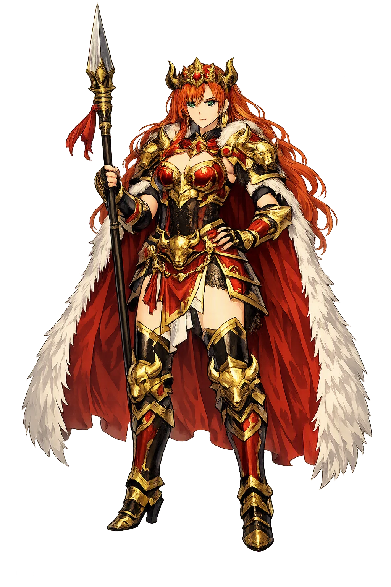
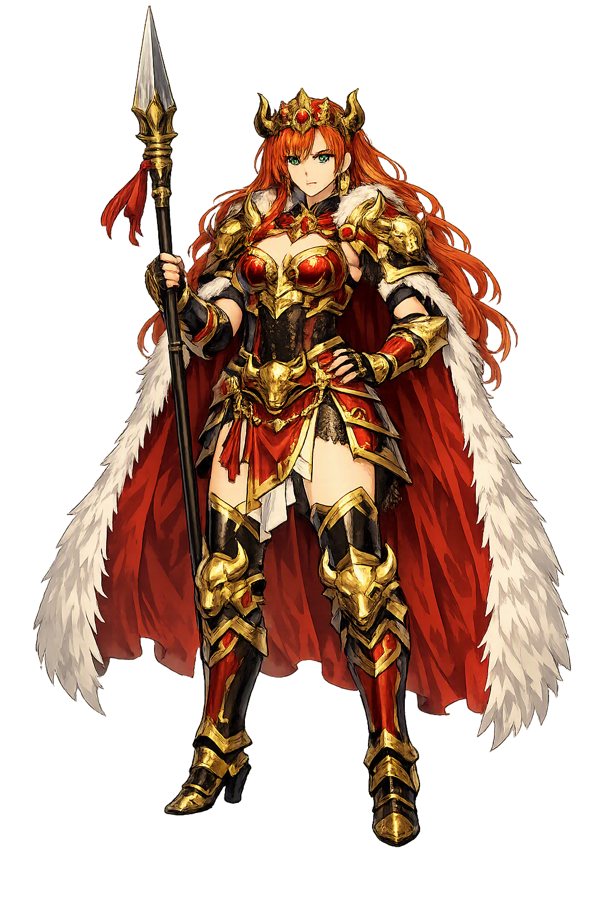

The Authentic Orthography
Sovereignty, War, Intoxication · 'The intoxicating one' (Old Irish medb, cognate with 'mead'), Queen of Connacht who drives the cattle raid of the Táin Bó Cúailnge.

Unicode restoration and ASCII comparison
Medb
The name survives in scholarly transliteration. Medb is the standard Celtic romanisation, documented in academic sources — “'The intoxicating one' (Old Irish medb, cognate with 'mead'), Queen of Connacht who drives the cattle raid of the Táin Bó Cúailnge.”. Because the spelling uses only Latin letters, the form is the same in both ASCII and Unicode.
No indigenous writing system is securely attested for individual celtic names. The form shown is a modern scholarly transliteration.
medb
The plain medb form is identical to the Unicode restoration. Because this name is already written in Latin letters, no diacritics, stress, or script information were lost — only capitalization differs.
Medb
The Unicode restoration does not need to recover lost marks for Medb. Its value is canonical spelling and consistent cataloguing, not the reconstruction of erased orthography. The domain is readable as-is to both DNS and humanity.
Medb.com → medb.com
The non-ASCII characters in Medb are encoded while the ASCII remains visible. To the DNS, it is Punycode. To humanity, it is Medb.
How Medb is preserved in writing
No indigenous writing system is securely attested for individual celtic names. The form shown is a modern scholarly transliteration.
Contribute scholarly provenance →Owned, ideal, and ASCII forms of Medb
Medb
The full Unicode restoration. medb.com is not in the PuniCodex collection — it is watched for release; if it drops, this temple upgrades to an owned flagship.
How Medb was spoken
The Pillow-Talk, the Bride-Gift Speech, and the Cattle Raid of Cooley
Medb of Crúachan is the ruling queen of Connacht and the driving will of the Táin Bó Cúailnge: the woman who audited fortunes with her husband in the night and invaded Ulster in the morning, who set the terms of her own marriages — a husband without meanness, without jealousy, without fear — and whom scholarship reads as Ireland's clearest survival of the sovereignty goddess, the land's own power to make and unmake kings.
The night audit at Crúachan: Medb and Ailill count their wealth and find themselves equal in everything — save one bull.
Finnbennach the White-Horned, who scorned a woman's keeping, and the Donn of Cúailnge — the balance of power on four legs.
A husband without meanness, without jealousy, without fear — the bride-gift no woman before her had asked of a man of Ireland.
Her royal rath at Rathcroghan, and beneath it the Cave of the Cats — the gate of the Otherworld in the medieval tales.
Stories of Medb
Medb's dossier is the Táin Bó Cúailnge, the longest and greatest tale of the Ulster Cycle — and unlike every other great name in Irish myth, she is not a goddess remembered as a woman but a queen the tradition may once have worshipped as a goddess. The tale itself never says which.
One night at Crúachan, when the royal bed had been made for Medb and Ailill, they fell into a 'bolster-conversation' — comrac chind cherchailli — and Ailill boasted that the woman married to a wealthy man is well off. Medb answered that she was well off before him: daughter of Eochu Feidlech, high king of Ireland, and the wealthier of the two. To settle it they had every treasure counted — cups, rings, cattle, sheep, horses — and the tally came out exactly even, save one item: the great bull Finnbennach, born in Medb's herd, had scorned to be counted a woman's chattel and walked over into Ailill's, where he stood as the White-Horned of Connacht.
That one beast broke the equality Medb would not live without. Her steward Mac Roth found the match: the Donn of Cúailnge, the Brown Bull of Cooley, kept by Dáire mac Fiachna in Ulster. Medb sent for a year's loan of him at princely terms — fifty heifers a year, a stretch of the plain of Aí, her own chariot, and the friendship of her thighs — and Dáire agreed. But the messengers drank and boasted that had the loan been refused they would have taken the bull by force, and Dáire swore that only by force would he ever be taken. The embassy came home empty, and Medb resolved on war.
The Táin lets Medb state her own terms, and the speech is the charter of her queenship. Daughter of the high king, wooed by the kings of Ireland, she refused them all, she says, 'for I asked a strange bride-gift such as no woman before me had asked of a man of the men of Ireland — a husband without meanness, without jealousy, without fear.' If he were mean, their wealth could not sit together, for she is generous in gifts; if jealous, she could not live beside him, 'for I was never without one man in the shadow of another'; if fearful, he would shame her in the front of every fight.
Such a man she found in Ailill mac Máta: no meanness, no jealousy, no fear. She brought him the bride-gift — the clothing of twelve men, a chariot worth thrice seven cumals, the width of his face in red gold, the weight of his left forearm in bronze — and it is into her province, not his, that he came. The Táin is blunt about the arithmetic: he is king of Connacht because he is married to Medb of Crúachan.
Medb timed the raid for the cess noínden, the pangs of the Ulstermen — the debility laid on the warriors of Ulster by [[macha|Macha]], whom they had forced to race the king's horses when she was great with child. With Ulster's fighting-men abed, Medb marched the hosting of four provinces north — Connacht's own, the Leinster Galeóin, and the exiles of Ulster under Fergus mac Róich, who knew every road and ford of the way and, the tale says plainly, shared the queen's bed with Ailill's leave, for the road could not be found without him.
One boy stood against the whole hosting: [[cuchulainn|Cú Chulainn]], untouched by the debility, who held the fords in single combat and took the heads of the best of Connacht one by one. Medb spent everything on him — terms, ambushes, satirists, her daughter Findabair promised to a dozen champions at once — and the hardest price fell on Ferdia, Cú Chulainn's own foster-brother, whom she plied with drink and the promise of Findabair until he took the ford. Four days they fought; the gae bolga ended it; and the march went on over the body of the one man Medb could not buy twice.
The hosts met at Gáirech and Irgáirech when the pangs lifted and Ulster rose; Medb's army broke, but the prize was already driven south — she had the Donn of Cúailnge, and she covered the retreat herself, in the tale's most unsparing passage, when her gush of blood came on her and she asked Cú Chulainn's protection for her army's rear. He granted it: 'no coward's weapon is the weapon of a woman.' Fergus mac Róich, looking back over the ruin of the hosting, gave the raid its verdict: 'This is what usually happens to a herd of horses led by a mare — their substance is taken and carried off and destroyed as they follow a woman who has misled them.'
The bulls settled the account themselves. Finnbennach saw the Donn and bellowed; they fought through the night across Ireland, and in the morning the men of Connacht found the Brown Bull standing over the White-Horned trampled to pieces. The Donn carried Finnbennach's carcass on his horns through Connacht — scattering the loin at Áth Luain, the liver at Trim — then turned north for Cúailnge and died there of his wounds and his victory. Medb had her bull, and her equality, and the Táin's dry arithmetic: the two most valuable beasts in Ireland, both dead, and nothing left to count.
Medb outlived the raid, outlived Ailill — slain at Conall Cernach's hand — and kept her sovereignty into age, spending her last years at Inis Cloithrinn, her island on Lough Ree, where she bathed in the pool every morning at sunrise. She had killed her sister Clothru, and Clothru's son Furbaide had been cut from his mother's womb — whence his name, Ferbend, 'of the cutting' — and he grew up with the debt of it.
Furbaide found the queen's bathing place and measured it the patient way: morning after morning he stood on the shore opposite and practiced his cast against the distance, until the stone flew true by habit. Then one sunrise, as Medb came to her bath, his sling let fly — a ball of hard cheese, the tale insists, the humblest weapon in Ireland — and the queen of Connacht, who had moved four provinces against Ulster and asked no man's leave for anything in her life, died by her nephew's hand at the water's edge. Her grave, the local tradition says, is the great cairn on Knocknarea in Sligo, where she stands buried upright, facing Ulster.
Medb is the only great figure in the Celtic corpus who insists, in her own voice, on being counted equal — and then proves the point by going to war over the one item on which she was not. Read her as a goddess and she is sovereignty itself, the land auditing its king; read her as a woman and she is something rarer in medieval literature: a ruler whose motives are entirely legible and entirely her own. The pillow-talk is not vanity. It is the whole doctrine of her queenship in one scene — that the account must balance, that consent is owed to her and not by her, that a husband is a choice with terms attached.
Enter Extended Lore